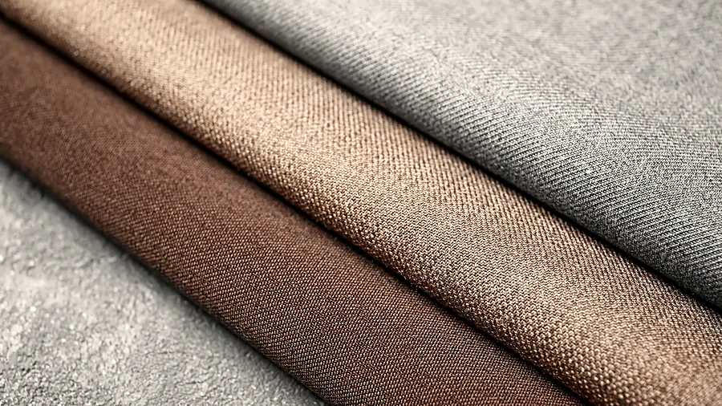
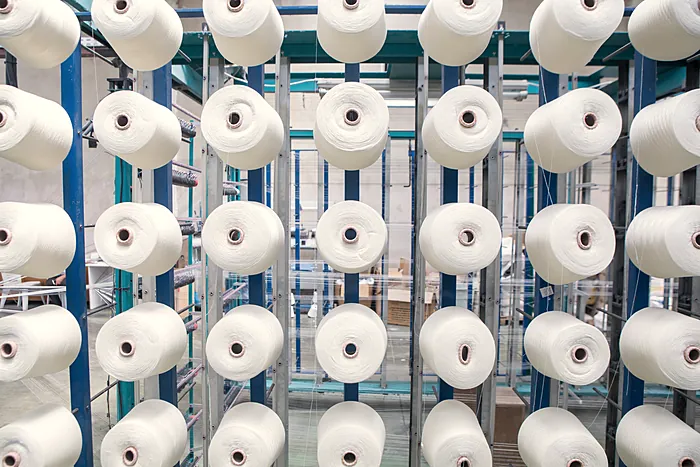
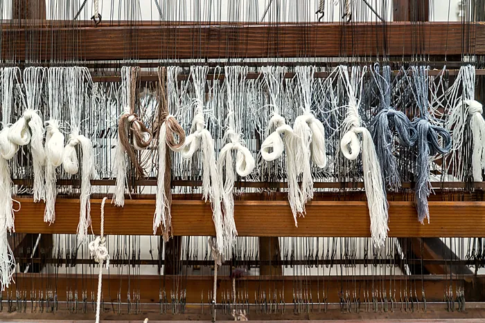
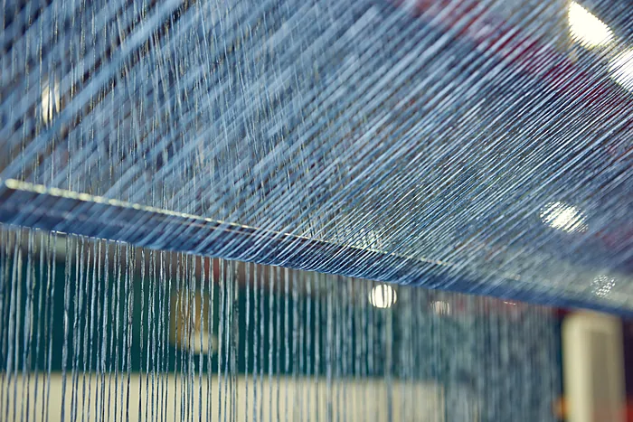
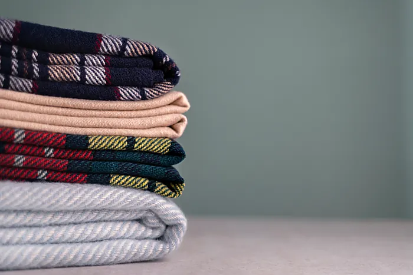
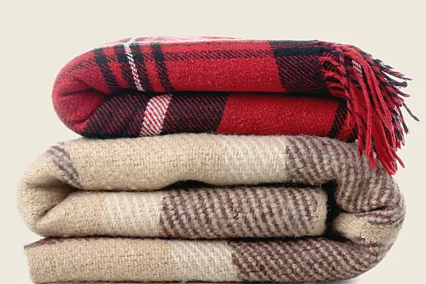

Kirkbrae Mill · Selkirk · woollen cloth woven to order
Every cloth here is a drawing first.
Heddle is a two-loom woollen mill on the Ettrick Water. Each cloth we weave begins as a draft: which shaft carries each end, which shafts each treadle lifts, and the order the treadles are pressed. The loom besideabove this page is reading the same drafts. Scroll, and it weaves. Point at a cloth, and it re‑threads.
150 cm finished width · 2/16 Nm lambswool · minimum two metres · from £58 a metre

The range
Eight cloths, one warp beam.
Each cloth is shown as it comes off the loom, and each has a draft, written out on the range page. Point at a card and the loom re-threads to it; every one of them is woven to order on the same two looms.

Kirkbrae Twill
£68/m2/2 twill · 410 g/m² · 22 ends/cm
The mill’s working cloth, in camel. The diagonal reads at arm’s length and goes at three metres, which is the right distance for a coat to be plain.

Ettrick Herringbone
£74/mBroken twill · 460 g/m² · 22 ends/cm
Eight ends up, eight down, and a break where they meet so the chevrons never come to a point. Peat on ecru.

Hound
£72/m2/2 twill, four and four · 400 g/m²
Not printed, not embroidered. Four dark ends, four light, the same in the weft, and a twill does the rest.

Kirkbrae Check
£66/mHerringbone, overchecked · 440 g/m²
The herringbone ground with a madder and peat overcheck drawn across it every twenty ends. A blanket, or a scarf with opinions.

Glen
£78/m2/2 twill, 34-end colour order · 400 g/m²
Four-and-four, two-and-two, then a pair of madder ends to close the repeat. It never looks the same twice.

Minchmoor Plaid
£58/m2/2 twill, brushed · 340 g/m² · shirt weight
A fifty-six-end plaid in woad, walnut and ecru, brushed on both faces. The lightest cloth we make, and the one that gets worn out.

Yarrow Chevron
£70/mBroken twill, 24-end · 480 g/m² · blanket
Twelve ends up, twelve down, woad on ecru, at blanket weight. The chevrons are a hand wide.

Hopsack
£70/m2/2 basket weave · 540 g/m² · upholstery
Two ends and two picks at a time, so the cloth is a small basket. Slate warp, ecru weft, and the heaviest thing on the beam.
The mill
Four days of decisions before the first pick.
-

Warping
Every warp is wound from the creel onto the beam, 3,300 ends over forty metres, in the colour order the draft asks for. A day, if nobody telephones.
-

Threading
Each end goes through one heddle on one shaft, by hand, in the order of the top row of the draft. Get one wrong and the cloth carries the mistake for forty metres, so we do not get one wrong.
-

Weaving
Two dobby looms, eight shafts each, a 160 cm reed. The dobby reads the treadling from a chain of pegged bars. You are reading it off the same draft, down the right-hand side.
-

Finishing
Off the loom the cloth is greige and open. It is scoured, milled until the weave closes, tentered to width and cropped. It leaves the mill a tenth narrower and considerably better.
- Ends in a warp
- 3,300
- Metres on a beam
- 40
- Shafts
- 8
- Reed
- 160 cm
- Finished width
- 150 cm
A real loom cannot re-thread itself in half a second. The one besideabove this page can, which is the only liberty it takes: every pick it has woven while you read is exactly the pick the draft called for.
Ordering
By the metre, or to your draft.

By the metre
Any cloth in the range, cut from the beam if it is on one and woven to order if it is not. Minimum two metres. Three to five weeks for a length woven to order; a week if it is on the beam.
To a draft
Bring us a draft from the drafting room. The code at the foot of that page is enough. We sett it for our yarn, weave thirty centimetres, post you the sample and quote for the length.
Swatches
A card of the eight cloths, cut from the real lengths, is £12 by post and comes off your first order.